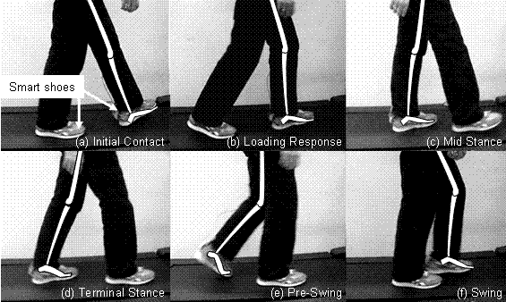
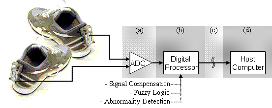
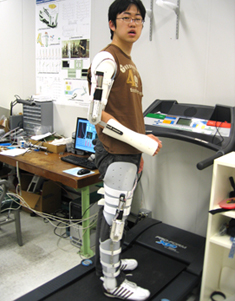
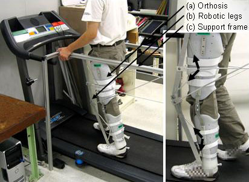

Current Projects
Past Projects
Advanced Vehicle Control Systems
Copier Paperpath Control
Disk Drive Control
Intelligent Machining
ILP Summary '96-'97
 Human Mechatronics
Human Mechatronics
-->Human Assistive Systems: Bio-Mechatronics
-->Intelligent Power Assist Systems Auto-Adaptive to Varying Human Characteristics and Environmental Conditions
-->Intelligent Power Assist Steering System
Human Assistive Systems: Bio-Mechatronics
Introduction
| Research
| Technical Objectives
| Related Publications
| Researchers

This research studies fundamental issues in the development of advanced sensing technologies for mobile assistive devices. We are developing a simple yet reliable means to identify the motion phases of gait including abnormalities in swing, single foot stance, step length, push off and weight distribution. The smart assistive device will utilize the identified results to assist elderly and patients in improved efficiency, effectiveness and safety in walking. Identification of the motion phases is achieved by measuring the grand contact forces (GCF).

In this research, we developed new sensing methods for GCF (e.g., Smart shoes), new analysis and recognition methods of the phases of human motion, and the integration of sensors in assistive devices. The developed analysis and recognition method has the following capabilities: 1) identification of the phases of human motion, 2) quantification of the abnormality of a patient's gait, and 3) estimation of the human joint torques for the feedback control of assistive devices. The effectiveness of motion phase identification are being evaluated on human subjects who exhibit a normal gait as well as those with an abnormal gait. Identified results are to be utilized in a variety of ways such as providing feedback information to patients to help them resume a normal gait.

We have developed prototype orthoses to assist patients as a part of this research. The developed devices utilize an innovative idea of flexible joint actuation for precise torque control.

Active assistive system

Passive assistive system

The technical objectives of this research are as follows:
- Establish methodologies to identify gait phases and detect abnormal gaits based on ground contact force measurements and verify them in a clinical environment.
- Devise schemes to evaluate patients in a clinical setting, to provide feedback to patients to make them aware of potentially hazardous situations (e.g. physiological side effects such as wear on hip joint bones) due to their abnormal gait, and to use the feedback to facilitate normal gait.
- Establish a signal processing and feedback control methodology based on the ground contact force measurement for active orthoses and exoskeletons and demonstrate their effectiveness with experiments challenging stability.

Please refer to the publication list page, Dr. Kong 's personal webpage, and Dr. Bae 's personal webpage for related publications.